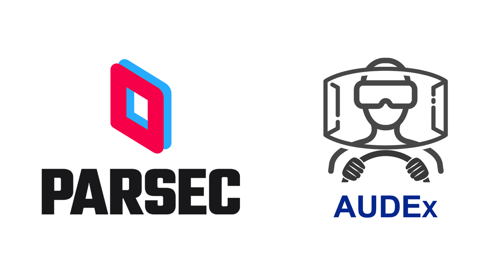

Parsec ist eine Remote-Desktop-Software, die es Nutzern ermöglicht, ihren Computer fernzusteuern. Im Rahmen des AUDEx-Projektes kann Parsec für das teleoperierte Steuern der AUDEx-Fahrzeuge – von praktisch überall aus – verwendet werden. Hierfür fungiert der AUDEx-Hauptrechner als "Host" und erlaubt nach Absprache die externe Fernsteuerung. Diese Website beschreibt das Vorgehen zur Installation der Parsec-Applikation unter verschiedenen Betriebssystemen sowie das Verbinden mit dem AUDEx-Computer.